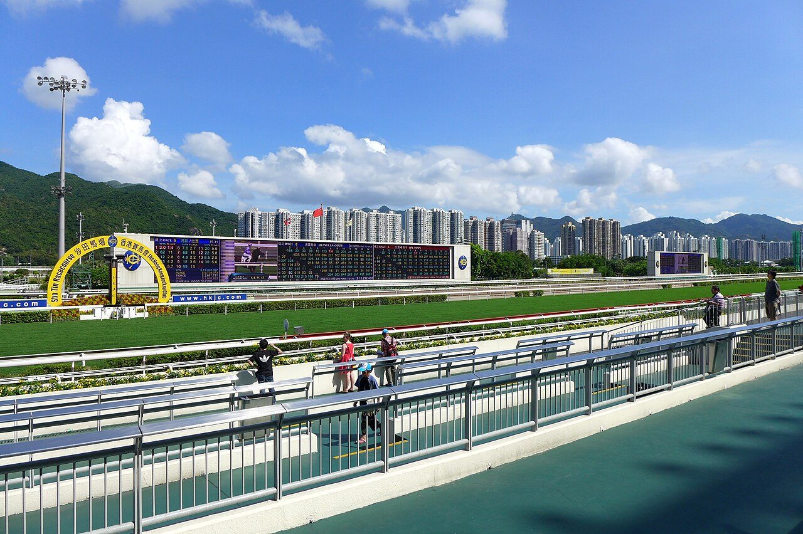

Ka Ying Rising encabeza los 18 ganadores de Grupo 1 seleccionados para las carreras internacionales de Hong Kong
El Jockey Club de Hong Kong publicó el miércoles la lista de caballos seleccionados para las LONGINES Hong Kong International Races, que se disputan el domingo 13 de diciembre en Sha Tin.

Las cuatro carreras de Grupo 1 reparten 130 millones de dólares de Hong Kong: la Hong Kong Cup (2.000 m, 40 millones), la Hong Kong Mile (1.600 m, 36 millones), la Hong Kong Sprint (1.200 m, 28 millones) y la Hong Kong Vase (2.400 m, 26 millones). Entre los seleccionados hay 18 ganadores de Grupo 1 y 31 caballos llegados de fuera de Hong Kong.
El gran reclamo es Ka Ying Rising, elegido LONGINES World's Best Racehorse, que buscará en la Sprint ser el primer caballo que la gana tres veces, después de sus victorias de 2024 y 2025. El velocista suma nueve Grupos 1, ha batido seis récords de pista en Sha Tin y lleva más de 1.000 días invicto en Hong Kong. Si gana, su jockey, Zac Purton, el más laureado de la carrera, firmaría su sexta Sprint. Le esperan, entre otros, el ganador de Grupo 1 Puro Magic, Red Mon Reve, Pair Pollux, Sound Moryana y Tuco Salamanca.
En la Mile, el local My Wish, que ganó el pasado domingo el Jockey Club Mile (Grupo 2), se medirá con True Love, de Aidan O'Brien y con tres Grupos 1, y con Never So Brave, Star Anise y Lake Forest. Voyage Bubble, ganador de la Triple Corona de Hong Kong y de la Mile en 2024 y 2025, cambia de objetivo y correrá la Cup, donde también están Almaqam, Sir Delius, Minnie Hauk y Map Of Stars, segundo de Benvenuto Cellini en la Breeders' Cup Turf de 2026.
La Vase será la carrera más internacional, con 11 visitantes entre los 14 seleccionados. Benvenuto Cellini, ganador del Irish Derby, busca dar a O'Brien su cuarta victoria en la prueba, frente al local Winning Wing, a Kingswood, ganador de la Caulfield Cup de 2026, y a Giavellotto, vencedor de la Vase en 2024.
Por Martín Larrañeta